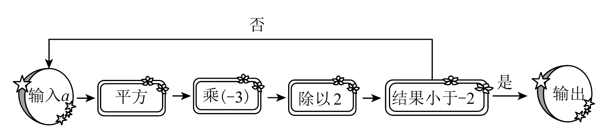
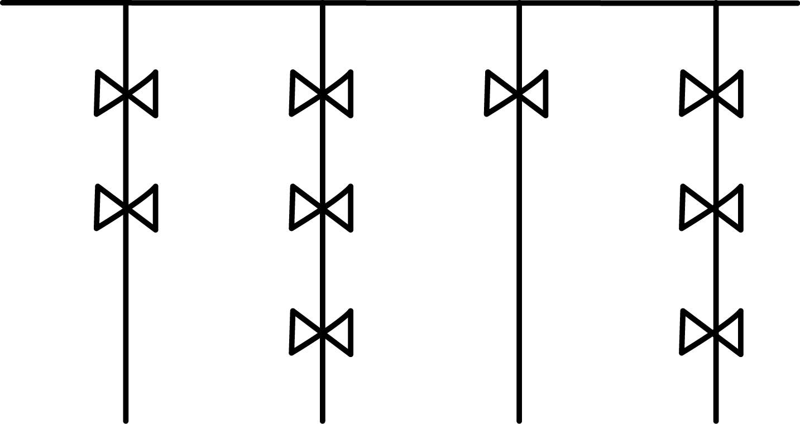
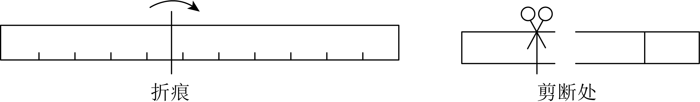
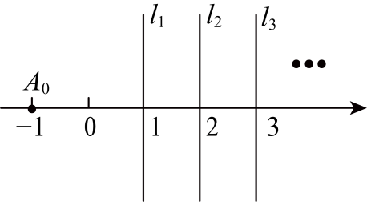
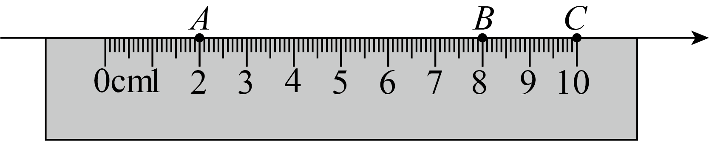
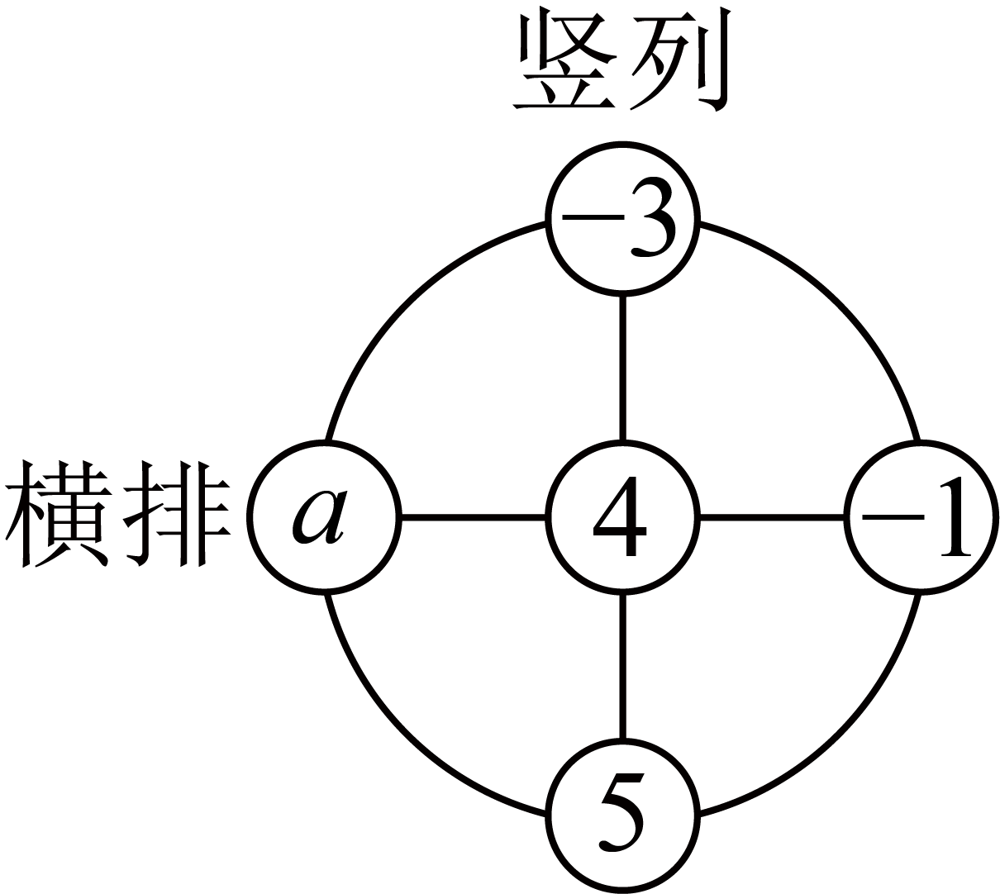
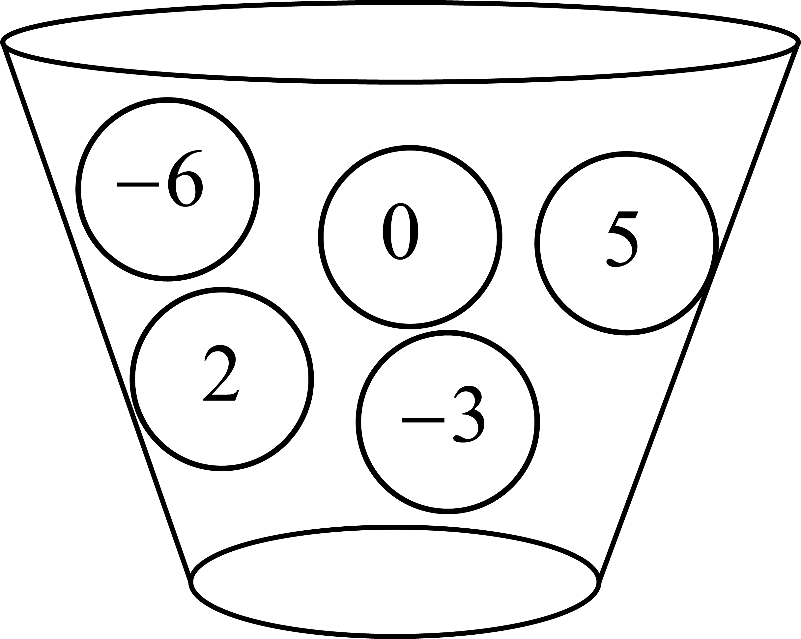

第二章 有理数及其运算·拔尖卷
【北师大版2024】
考试时间：120分钟 满分：120分
姓名：___________班级：___________考号：___________
考卷信息：
本卷试题共24题，单选10题，填空6题，解答8题，满分120分，限时120分钟，本卷题型针对性较高，覆盖面广，选题有深度，可衡量学生掌握本章内容的具体情况！
第Ⅰ卷
一．选择题（共10小题，满分30分，每小题3分）
1．（3分）（24-25七年级上·浙江杭州·期中）若x>0，y<0，x+y>0，则下列关系正确的是（ ）
A．y<−x<−y<x B．y<−x<x<−y
C．−x<y<x<−y D．−x<y<−y<x
2．（3分）（24-25七年级上·河北保定·期末）下列各式中，运用运算律不正确的是（ ）
A．−4×8=8×−4
B．−24×25×−16=25×−24×−16
C．−4×13×−6=−4×13×−6
D．−6×12+−13=−6×12+−13
3．（3分）（24-25七年级下·青海西宁·期末）小杰同学在本学期学习了有关“低碳生活”的内容后，查阅资料得到数据：一个普通快递包装约排放出200g二氧化碳，一盆绿萝每天约吸收0.15g二氧化碳．若要将一个快递包装排放出来的二氧化碳在一天内全部被吸收，至少需要绿萝（ ）
A．1332盆 B．1333盆 C．1334盆 D．1335盆
4．（3分）（24-25七年级上·陕西西安·期末）如图是小宇用计算机设计的一个有理数运算的程序框图，若输入的数a为1，则输出的结果是（ ）

A．−278 B．278 C．−32 D．32
5．（3分）（2025·广西柳州·三模）“结绳计数”是远古时代人类智慧的结晶，即人们通过在绳子上打结来记录数量，类似我们现在熟悉的“进位制”，如图所示是一位古人记录的当天采摘果实的个数，在从右向左依次排列的不同绳子上打结，满四进一，根据图示可知，这位古人当天采摘果实的个数是（ ）

A．186 B．185 C．184 D．183
6．（3分）（23-24七年级上·广东佛山·开学考试）“算24点”的游戏规则是：用“+，−，×，÷”…四种运算符号把给出的4个数字连接起来进行计算，要求最终算出的结果是24，例如，给出2，2，2，8这四个数， 可以列式2÷2+2×8=24．以下的4个数用“+，−，×，÷”四种运算符号不能算出结果为24的是（ ）
A．1，6，8，7 B．1，2，3，4 C．4，4，10，10 D．6，3，3，8
7．（3分）（23-24七年级上·四川达州·期末）已知21=2，22=4，23=8，24=16，25=32，…，请你推算22024的个位数字是（ ）
A．8 B．6 C．4 D．2
8．（3分）（24-25七年级上·重庆沙坪坝·阶段练习）对于1+2×3−4÷5，不改变数字和运算符号的顺序，也不添加任何运算符号，对至少两个数添加括号后并计算出结果，称为一种“加括号操作”．例如：1+2×3−4÷5=315是一种“加括号操作”，315是其运算结果：1+2×3−4÷5=−35是一种“加括号操作”，−35是其运算结果，给出下列说法：
①至少存在一种“加括号操作”的运算结果是75；
②不存在任何“加括号操作”的运算结果是265；
③所有“加括号操作”共有7种不同的运算结果．
其中正确的个数是（ ）
A．0 B．1 C．2 D．3
9．（3分）（24-25八年级下·湖南湘西·阶段练习）已知y=x−a+x−20+x−a−20，其中0<a<20，a≤x≤20，那么y的最小值为( )
A．40 B．30 C．20 D．10
10．（3分）（24-25七年级上·湖南娄底·期末）下表列出了国外几个城市与北京的时差（正数表示同一时刻比北京时间早）．
城市 | 纽约 | 巴黎 | 东京 |
与北京的时差/h | −13 | −7 | +1 |
2025年元月6日19:00，我国中央广播电视总台综合频道CCTV−1《新闻联播》节目开始播放时，下列各城市的时间表示错误的是（ ）
A．纽约是2025年元月6日6:00 B．巴黎是2025年元月6日11:00
C．东京是2025年元月6日20:00 D．上海是2025年元月6日19:00
二．填空题（共6小题，满分18分，每小题3分）
11．（3分）（24-25七年级上·湖南邵阳·期末）若a，b互为相反数，c，d互为倒数，m的绝对值最小的数，则2m−2024a+b−cd的值是 ．
12．（3分）（24-25七年级上·湖北恩施·期末）已知：m=a+bc+2c+ba+3a+cb，且abc>0，a+b+c=0．则m共有x个不同的值，若在这些不同的m值中，最小的值为y，则x−3y=
13．（3分）（24-25七年级上·浙江杭州·期中）如图，在数轴上剪下一条11个单位长度（从−2到9）的线段，并把这条线段沿某点折叠，然后在重叠部分某处剪一刀得到三条线段．若这三条线段的长度之比为1:1:2，则折痕处对应的点所表示的数可能是 ．

14．（3分）（2025·陕西咸阳·二模）高斯被认为是历史上最杰出的数学家之一，享有“数学王子”之称．现有一种高斯定义的计算式，已知x表示不超过x的最大整数，例如−0.8=−1．现定义x=x+x，例如x=1.5+1.5=2.5，则−2.5= ．
15．（3分）（2025·北京门头沟·二模）某快递公司因天气原因需将五种货物进行延迟配送，每名配送员每次只能配送一种货物，从配送开始起进行计时，每延迟一分钟需赔付1元，忽略其它因素的影响，五种货物的配送时间如下表：
货物 | A | B | C | D | E |
配送时间（分钟） | 5 | 8 | 9 | 7 | 10 |
（1）如果由一名配送员进行配送，那么下列三个配送顺序：①D→B→E→A→C；②D→A→C→E→B；③C→A→E→B→D中，赔付最少的是 （填序号）；
（2）如果由两名配送员同时进行配送，最少需要赔付 元．
16．（3分）（23-24七年级上·陕西西安·阶段练习）如图，过数轴上表示1的点作数轴的垂线l1，过数轴上表示2的点作数轴的垂线l2，过数轴上表示3的点作数轴的垂线l3，⋯．已知点A0表示的数为−1，将点A0沿直线l1翻折得到点A1，将点：A1沿直线l2翻折得到点A2，将点A2沿直线l3翻折得到点A3，⋯则A2021表示的数为 ．

第Ⅱ卷
三．解答题（共8小题，满分72分）
17．（6分）（24-25七年级上·贵州六盘水·期末）计算：
(1)−9−−14+−10−−15；
(2)32÷−23−−18×−4．
18．（6分）（2025·河北邯郸·一模）如图，以1cm为1个单位长度，用直尺画数轴，数轴上的点A，B，C刚好对着直尺上的刻度2、刻度8和刻度10．设点A，B，C所表示的数的和是p，该数轴的原点为O．

(1)分别计算出原点O与点C重合时、与AB的中点重合时p的值．
(2)原点O沿着数轴每向左移动1cm，p的值将会如何变化？当p的值为−4时，求原点O的位置．
19．（8分）（2025·河北廊坊·二模）如图，在一个圆形转盘上，标有五个有理数．

(1)求这已知的四个数的积；
(2)若横排三个数的和与竖列三个数的和相等．
①求a的值：
②求a，4，5，−1这四个数的平均数．
20．（8分）（24-25八年级下·四川广安·阶段练习）下表是某水库一星期内的水位（单位：米）变化情况：
星期 | 一 | 二 | 三 | 四 | 五 | 六 | 日 |
水位变化 | +2.4 | +0.6 | −4.0 | −1.6 | +3.5 | +2.0 | −1.5 |
注：该水库的警戒水位是35.5米．表格中“ + ”表示比警戒水位高，“ − ”表示比警戒水位低．
(1)该水库这星期水位最高的一天是星期_______，这一天的实际水位是_______米．
(2)若规定水位比前一天上升用“ + ”，比前一天下降用“ − ”，不升不降用“0”．请补全下面的这星期水位（单位：米）变化表．
星期 | 一 | 二 | 三 | 四 | 五 | 六 | 日 |
水位变化 | +3.1 | +2.4 | −1.5 | −3.5 |
(3)上一星期日该水库的水位是多少？与上星期日相比，这一星期日该水库水位是上升了，还是下降了？变化了多少？
21．（10分）（24-25七年级上·广东佛山·阶段练习）对于含绝对值的算式，在有些情况下，可以不需要计算出结果也能将绝对值符号去掉，例如：9−8=9−8；8−9=9−8；18−19=18−19；19−18=18−19．
观察上述式子的特征，解答下列问题：
(1)把下列各式写成去掉绝对值符号的形式（不用写出计算结果）：①35−84= ；
②1114−1116= ．
(2)当a>b时，a−b= ；当a<b时，a−b= ．
(3)计算：13−12+14−13+15−14+⋅⋅⋅⋅⋅⋅+12025−12024．
22．（10分）（2025·河北唐山·二模）如图，容器中装有5个小球，小球上分别标有数字：−6，0，5，2，−3．现从容器中随机摸出四个小球，对小球上的数字进行运算．

(1)①若摸出的四个小球上分别标有2，−6，0，−3，计算：2×−6−0−−3；
②若摸出的四个数字的积不为0，求这四个数字的和；
(2)将摸出的四个小球上的数字按一定顺序填入“□−□−□−□”中的“□”内，计算所得算式的结果，直接写出计算结果的最小值．
23．（12分）（24-25七年级上·辽宁鞍山·阶段练习）乒乓球，被称为“国球”，在中华大地有着深厚的群众基础．2000年2月23日，国际乒乓球大会决定从2000年10月1日起，乒乓球比赛将使用直径40mm、重量2.7g的大球，以取代38mm的小球．某工厂按要求加工一批标准化的直径为40mm乒乓球，但是实际生产的乒乓球直径可能会有一些偏差．随机抽查检验该批加工的10个乒乓球直径并记录如下：−0.4，−0.2，−0.1，−0.1，−0.1，−0.05，+0.1，+0.2，+0.3，+0.5（“+”表示超出标准；“−”表示不足标准）．
(1)其中偏差最大的乒乓球直径是______mm；
(2)抽查的这10个乒乓球中，最符合标准的乒乓球的直径是______mm？
(3)若误差在“±0.25mm”以内的球可以作为合格产品，误差在“±0.15mm”以内的球可以作为良好产品，这10个球的合格率是______；良好率是______．
24．（12分）（24-25七年级下·河北廊坊·阶段练习）生活在数字时代的我们，很多场合使用二维码来表示不同的信息，类似的，可通过正方形网格中，对每个小正方格涂黑色或不涂色所得的图形来表示不同的信息．在代码编制上巧妙利用构成计算机内部逻辑基础的“0”，“1”，使用若干个与二进制相对应的几何图形来表示数值（黑色代表1，白色代表0）．如图1是某校一次考试中三位同学的准考证号对应的二维码的简易编码．如图2是王芳同学准考证号的二维码简易编码，其中第一行代表二进制的数字11000，转化成10进制为：1×24+1×23+0×22+0×21+0×1=24．同理，第二行至第五行代表二进制的数字分别为1100，111，11100，1101，转化成10进制为：12，07，28，13，将五行编码有序组合在一起就是王芳的准考证号2412072813，其中第一行编码“24”表示区县，第二行编码“12”表示学校，第三行编码“07”表示班级，第四行编码“28”表示考场号，第五行编码“13”表示座位号．
（1）如图3是本次考试张亮同学准考证号的二维码简易编码，其中第四行代表二进制的数字是10101，转化成10进制后可得他的考场号是______．
（2）本次考试中，赵军的准考证号是2917021311，如图4是赵军为自己绘制的二维码简易编码，但少涂黑了3个小正方形，请你在图4中帮他补充完整，在补充的方格中画．